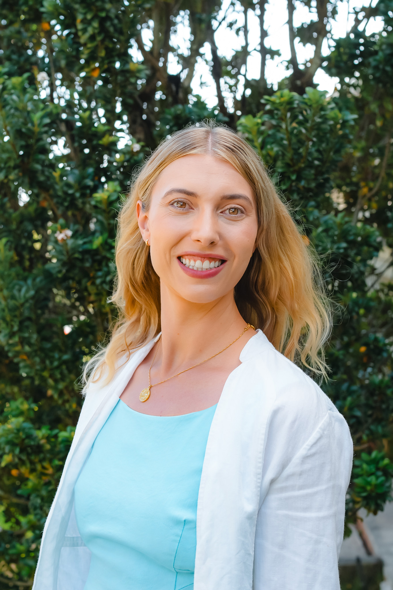

About
I’m a geospatial data scientist based in Honolulu, Hawaiʻi, working at the intersection of Earth observation, ecological research, and real-world decision-making.
I’m driven by a belief that better data can lead to better decisions, and that science is most useful when it is accessible to the people who need it the most.
Background
Over the past eight years, I’ve worked across remote sensing, spatial modeling, forest and grassland ecology, sustainable recreation, marine planning, renewable energy, and deforestation monitoring. At CBI, I work across partner projects with different scientific questions and data needs. My projects have ranged from site-specific ecological assessments and research in Indonesian oil-palm landscapes to continental vegetation analyses supporting ecosystem-service models and tools for monitoring forests around the world.
My path into geospatial science began in the Carlson Lab at UH Mānoa and continued through graduate research using remote sensing to examine voluntary, market-driven sustainability certification in Indonesian oil-palm landscapes.
Expertise and approach
I specialize in transforming large, complex spatial datasets into useful analyses, tools, and stories. My work combines platforms such as Google Earth Engine, Python, R, and ArcGIS with satellite, climate, ecological, and other geospatial data. I’ve built reproducible processing pipelines, automated decades of imagery analysis, scaled regional methods to the continental United States, developed interactive mapping tools, and contributed to peer-reviewed research.
I’m often the connection between technical researchers and the people who could use their work. That might mean helping scientists prepare their data for an interactive public map, translating stakeholder feedback into model variables, or designing a tool that allows nontechnical staff to explore near-real-time deforestation alerts. I enjoy solving the technical puzzle, but I’m equally interested in what happens afterward: whether the results are understandable, accessible, and capable of supporting an actual decision.
My work has contributed to collaborative climate research, federal conservation and marine-planning initiatives, forest-monitoring tools, and analyses already being used to support planning and resource decisions. Across those projects, I’ve developed a reputation for bringing curiosity, warmth, and clarity to technical work—and for asking enough questions to understand both the analysis and the people it is intended to serve.
What I’m exploring next
I’m especially curious about how emerging AI methods can support research, analysis, and decision-making—from finding new ways to work with Earth observation data to synthesizing complex information and making technical knowledge more accessible. I’m beginning to expand my work into the AI space, bringing a researcher’s attention to evidence and data quality, a geospatial scientist’s experience with complex datasets, and a practical focus on building things people can actually use. I’m particularly drawn to work that combines technical problem-solving, cross-functional collaboration, and science communication. I’m interested in using AI to accelerate research and expand access to scientific knowledge, while keeping the science sound and avoiding reinforcement of existing inequalities.
Beyond the work
Outside of work, I’m usually exploring Hawaiʻi by trail or ocean, taking photographs, planning an overly ambitious trip, or writing about travel. I’m always happy to hear from former colleagues, collaborators, classmates, and others working with Earth data to solve interesting problems.